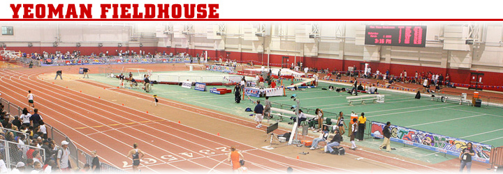

2015/2016 Scheduleroster
Upcoming events for the season/ things to look forward to/ NEW TRACK! ckeck it out git ls-remote origin
|
NEW HEAD COACH CARL LEWIS Track and field athlete Carl Lewis competed in four Olympic Games. He won nine gold medals, including four at the 1984 Olympics in Los Angeles.
|